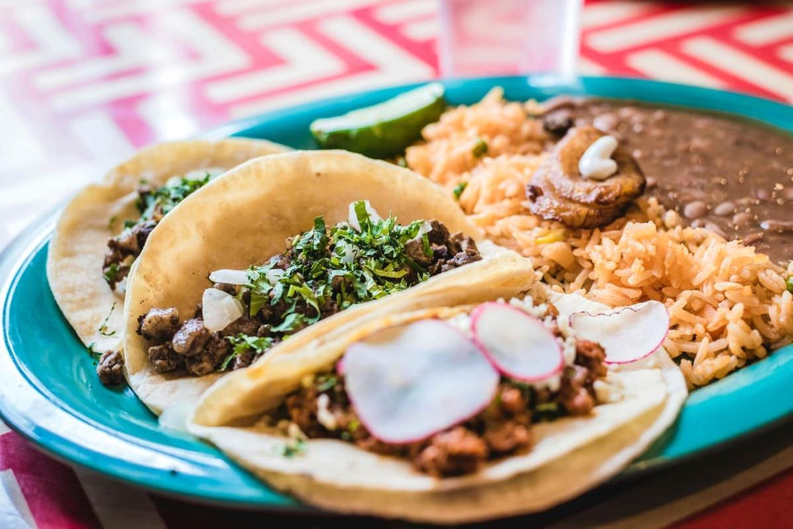

Un Legado Culinario de 3,000 Años
La salsa de maíz no es simplemente un acompañamiento en la cocina mexicana; es un símbolo de identidad cultural que se remonta a las civilizaciones mesoamericanas. Los registros arqueológicos muestran que los olmecas, considerados la "cultura madre" de Mesoamérica, ya preparaban versiones primitivas de esta salsa alrededor del año 1,500 a.C.
Según el Códice Florentino, documento del siglo XVI escrito por fray Bernardino de Sahagún, los aztecas consideraban al maíz como "nuestra carne, nuestros huesos", y lo preparaban en salsas ceremoniales durante los festivales en honor a Centéotl, dios del maíz.
El Maíz en la Cosmovisión Mexicana
Para entender la importancia de esta salsa, debemos comprender el papel sagrado del maíz:
- Creación del hombre: El Popol Vuh narra que los dioses crearon al hombre a partir de masa de maíz después de intentos fallidos con barro y madera.
- Calendario agrícola: Las fases de siembra, cultivo y cosecha regían la vida social y religiosa.
- Variedades sagradas: Cada color de maíz (blanco, amarillo, rojo, azul, negro) tenía asociaciones divinas específicas.
Receta Ancestral de Salsa de Maíz
Esta versión proviene específicamente de la región zapoteca de los Valles Centrales de Oaxaca, donde se ha transmitido oralmente por generaciones en la comunidad de Teotitlán del Valle.
Ingredientes (para 4 personas)
- 2 tazas de maíz criollo nixtamalizado (preferiblemente maíz azul)
- 3 chiles pasilla oaxaqueños secos
- 2 chiles de agua frescos
- 1 diente de ajo criollo
- 1/2 cebolla blanca mediana
- 1 cucharadita de sal mineral (sal de Tehuantepec)
- 1/4 de taza de hojas de pitiona fresca (hierba santa)
- 1/2 litro de agua purificada
- 1 piedra de molcajete (opcional pero auténtico)
Preparación Paso a Paso
Fase 1: Nixtamalización del Maíz
- Lavar el maíz con agua corriente para eliminar impurezas
- En una olla de barro, mezclar el maíz con 2 litros de agua y 1 cucharada de cal alimentaria
- Hervir a fuego medio durante 45 minutos, removiendo ocasionalmente
- Retirar del fuego y dejar reposar toda la noche (12-14 horas)
- Al día siguiente, enjuagar 3 veces hasta que el agua salga limpia
Fase 2: Preparación de Ingredientes
- Tostar ligeramente los chiles secos en comal de barro hasta que desprendan aroma
- Remojar los chiles en agua tibia durante 20 minutos
- Asar los chiles frescos, ajo y cebolla hasta que estén ligeramente ahumados
- Desvenar los chiles y reservar las semillas (se usan después para ajustar el picor)
Fase 3: Molido Tradicional
Técnica ancestral: El molido en metate (piedra volcánica) es crucial para la textura auténtica.
- Colocar el maíz nixtamalizado en el metate
- Moler con movimiento circular usando la mano del metate (tejolote)
- Añadir gradualmente los demás ingredientes
- Continuar moliendo hasta obtener una pasta homogénea (aproximadamente 30-40 minutos)
Fase 4: Cocción Final
- Transferir la mezcla a una olla de barro
- Añadir el agua poco a poco hasta alcanzar consistencia deseada
- Cocinar a fuego lento durante 25 minutos, revolviendo constantemente con cuchara de madera
- Rectificar sazón con sal y semillas reservadas
- Servir en cazuelas de barro con tortillas hechas a mano
Secretos de las Abuelas
- Tiempo lunar: Las cocineras tradicionales prefieren preparar la salsa durante luna creciente, cuando dicen que el maíz "abraza mejor los sabores".
- Temperatura del agua: Nunca usar agua recién hervida para remojar los chiles, ya que destruye sus aceites esenciales.
- Orden de molido: Primero el maíz, luego los chiles, después los aromáticos. Este orden afecta la textura final.
Variantes Regionales
Esta receta base tiene múltiples adaptaciones según la región:
Versión Yucateca (Salsa de Maíz Colado)
- Usa maíz blanco y chiles habaneros
- Incluye semillas de pepita molida
- Se cuela por tela de manta para textura ultra suave
- Acompaña tradicionalmente cochinita pibil
Versión Poblana (Salsa de Maíz con Chileatole)
- Combina maíz con hierbas de la región (epazote, hoja de aguacate)
- Lleva trozos de elote fresco
- Espesada con masa de maíz
- Se sirve caliente en cazuelas de talavera
Versión Norteña (Salsa de Maíz con Carne Seca)
- Incorpora machaca (carne seca desmenuzada)
- Usa chiles de árbol y chiltepín
- Preparada en sartén de hierro fundido
- Acompaña con tortillas de harina